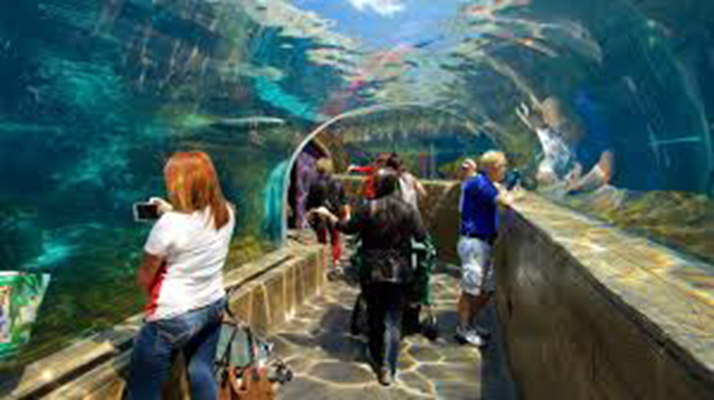

Considerado uno de los mejores zoologicos a nivel mundial, el Henry Doorly Zoo and Aquarium de Omaha es sin duda la mejor
experiencia en zoologicos interactivos. Formado por 130 acres, alberga una gran cantidad de diferentes animales, allí se
pueden explorar lugares exóticos y cuevas subterráneas con miles de especies de todo el mundo que conservan su hábitat natural.
Actualmente se pueden apreciar una gran cantidad de exposiciones tanto en su interior como en su exterior.
Se estima que cada año más de 25 millones de personas visitan el Zoologico de Omaha. La historia del Henry Doorly Zoo se remonta
al año 1894, en donde comenzó como Riverview Park Zoo, a los cuatro años ya contaba con más de 120 animales. La Sociedad Zoologica
de Omaha fue fundada en el año 1952, su finalidad era mejorar el zoologico para convertirlo en la principal atracción de la ciudad.
Omaha Zoo New Atractions
Zoológico San Diego
El Zoo de San Diego es uno de los más grandes del mundo formado por 40 hectáreas, las cuales albergan más de 3.700 animales de 650
especies diferentes. En el Zoo de San Diego vais a encontrar todo tipo de animales, entre ellos animales en peligro de extinción
como los pandas gigantes o el tigre de Sumatra.
También es importante señalar que este zoo se divide en dos partes, una formada por el clásico Zoo y otra formada por el conocido
Safari Park, donde se exhiben los animales en su hábitat, pero en un espacio mucho más amplio. El Safari Park en realidad es como
hacer un safari, pero en San Diego, ya que da la sensación que los animales realmente están en su hábitat.
Zoológico Loro Parque
A los pies del Teide, en el valle de La Orotava, Loro Parque reúne más de 13 hectáreas de especies: pingüinos, delfines, orcas,
leones marinos, loros, papagayos, gorilas, chimpancés, tigres, jaguares, tiburones, peces tropicales o caimanes. Un gran parque
de la naturaleza que tiene el objetivo de mantener poblaciones de animales con problemas de conservación y de difundir un apasionado
mensaje ecológico.
Fundado en 1972 como un paraíso para papagayos, se ha convertido en uno de los principales atractivos turísticos de Canarias. Su
extensión alcanza los 135.000 metros cuadrados y cuenta con un acuario, con el espacio Naturavision y con una gran diversidad de
animales.
Zoológico San Luis

El Parque Zoológico de San Luis es un zoo situado en el Forest Park, San Luis, Misuri. Con un terreno de 36 hectáreas, alberga unos
18.000 animales de unas 700 especies diferentes que representan los principales continentes y biomas del mundo. La entrada es gratuita,
aunque para algunas atracciones hay que pagar entrada.
En 1939 los pandas gigantes Happy y Pao Pei llegaron al zoo y en 1941 llegó Phil el Gorila, que se convertiría en uno de los animales
más famosos del zoo.
La construcción del Zooline Railroad, tren en miniatura del parque, fue terminada en 1913. Este trenecito tiene un recorrido de 2'4 km
y una duración de 20 minutos.
Zoológico Singapur
El Singapore Zoo (zoológico de Singapur) es uno de los principales jardines zoológicos del mundo, elegido varias veces como mejor
zoológico de Asia. Se encuentra localizado en el norte de Singapur, en el medio de una reserva natural, en un entorno de selva tropical.
El zoo, que ocupa una extensión de 26 hectáreas, alberga a 2.800 animales de 300 especies. Tiene varios kilómetros de senderos asfaltados
que permite ver de cerca todas las especies, de los osos polares a los orangutanes.
Las especies están agrupadas en diferentes recintos temáticos. La mayoría de los recintos son de gran tamaño y algunas especies vagan
libremente por el parque.